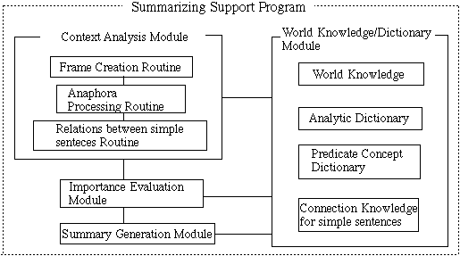

Machine: PSI Environment: SIMPOS Language: ESP Source Code: 3 MB Documents: Manual (English/Japanese)

Context Analysis Module consists of three routines: "Frame Creation" that translates surface words in the input text into frames, attributes or values, "Anaphora Processing" that identifies frames according to anaphoric relations, "Intersentence Relation Analysis" that connects two sentences according to anaphoric relations and conjunctives. The output of Context Analysis Module is an anaphoric relations and a text structure. Importance Evaluation Module evaluates each sentence by applying some criteria to yield importance score, which are used in the Summary Generation Module to select a most important sentence.